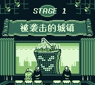
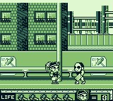
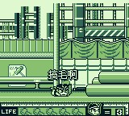
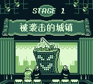
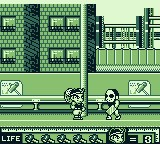
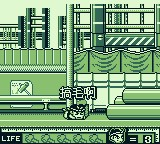
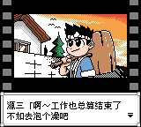
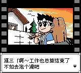
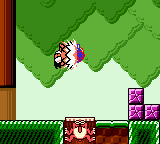
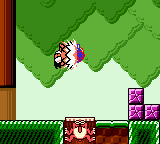

FC 踢王


FC 哇咿哇咿世界2 SOS!!帕塞利城


Wai Wai World 2 - SOS!! Paseri Jou
ワイワイワールド２ ＳＯＳ！！パセリ城
哇咿哇咿世界2 SOS!!帕塞利城
【汉化名单】
破解：MEZARANSU
翻译：拒绝融化
美工：拒绝融化
测试：拒绝融化
【iNES信息】
Mapper：21（VRC4a）
PRG：256K
CHR：512K
【免责声明】
本游戏仅供研究用
禁止用于商业用途
【特别说明】
1、由于汉化时候用到了512K大容量CHR，官方并没有游戏使用过，所以部分模拟器不支持就会出现花屏情况。
2、MESEN和FCEUX模拟器测试通过。
3、VRC4烧录卡测试通过。
【V1.1修正】
1、标题调整。
2、双人模式下的一些文本错误问题。
【汉化感言】
好的同学们！许久不见啦！新汉化！这次为同学们带来的是FC平台的科纳米哇咿哇咿世界二代的汉化版！想必同学们对这个游戏都比较熟悉了，它可以说是大乱炖类游戏的鼻祖系列。虽然同一代的差别有点大，还带着一些硬伤，但它也算是一款质量上乘的游戏，难度不高，双人同屏也非常的有趣！喜欢科纳米系列作品的同学们不容错过喔！
在本作中，玩家将扮演西纳蒙博士开发的超级机器人——瑞可，去拯救被大魔法使瓦鲁蒙掳走的哈布公主。在冒险中，玩家可以通过变身道具来变身成为科纳米系列游戏的主角们来闯关，他们分别是：来自五右卫门系列的五右卫门、来自超级宝宝的乌帕、来自恶魔城系列的西蒙、来自魂斗罗系列的比尔以及来自月风魔传的风魔，它们分别有着各自的武器或能力，另外关卡设计也是汲取了各个科纳米游戏的精髓。除此之外游戏中还会出现很多其他的科纳米系列游戏中的角色，你能全部认出它们嘛？
本作削减了前作的地图探索和收集要素，加入了更多娱乐性的关卡，比如拼图关卡、赛车以及各式各样的飞行关卡等，玩法多样，使其变成了一款休闲娱乐为主的游戏，无论对系列原作是否熟悉，都可以可以轻松上手愉快游戏。流程虽然比较线性，但是也有几条分支路线可供选择，为游戏带来了更多的可玩性。画风可爱音乐动听，再加上有情怀加持，这样的游戏谁能拒绝呢？
这一次的汉化跨度就比较长了，从去年七月份立项开始到现在经历了半年多之久，最后终于是出来了。游戏中除了片尾staff之外能看得到的日文（包括各种图片）应该都进行了翻译，英文部分则一如既往地保持原样。名词之类的也是查阅了很多资料进行了考证，也征求了很多dalao滴意见，最终采取了比较靠谱的翻译（蝰蛇战机这个翻译就是来自雷精灵汉化的沙罗曼蛇）。一些地方也是不太好翻译，比如惠比寿丸的口癖，以及模棱两可的奇怪的关卡名233都是经过了反复斟酌和讨论才最终敲定，希望这次的翻译能够让同学们满意。同时感谢帮助过我的dalao们！
以上！这就是这次为同学们带来的game！祝同学们玩得开心！下次见！
——拒绝融化
FC 骷髅13 第一章 诸神的黄昏


FC 亚当斯一家 法斯特叔叔的探索


GB 忍者蛙


FC 星之卡比 梦之泉的物语


破解：MEZARANSU
翻译：无敌阿尔宙斯、夜灵的天空
美工：星夜之幻
测试：无敌阿尔宙斯
【iNES信息】
Mapper：05（MMC5）
PRG：512K
CHR：512K
SRAM：8K
【免责声明】
本游戏仅供学习研究用
禁止用于一切商业用途
【特别说明】
1、本游戏是基于美版Rev A基础上进行修改汉化，文本是采用日版文本进行翻译，图片也是使用日版图片进行修改而成。
2、Nestopia、Nestopia Plus、Nintendulator模拟器测试在存档选择界面切入时候会闪屏一下，VirtuaNES模拟器测试不能通过，FCEUX、MESEN模拟器测试通过。
3、部分模拟器在游戏运行时候会生成64K的存档文件，实际上使用大小是8K，8K存档跟美版8K存档互通，而64K大小的存档则不可以。
4、原版有进度倒退BUG（达成100%进度且完美后，以继续游玩游戏通关，进度则会倒退），目前已做修正。
【汉化感言】
无敌阿尔宙斯：美版ROM套日版文本快成我们组的传统艺能了。
星夜之幻：Aseprite真好用，建议搞FC/GB绘图的人手来一份。
夜灵的天空：“窝就是个酱油QAQ”。
MEZARANSU：这次游戏的容量双双达到了MMC3上限，唯有靠大容量MMC5来完成这次的汉化项目，或许会有人问，为什么不直接用日版ROM来修改汉化，其实最初就是用日版ROM来进行的，Mapper都转好MMC5了，结果发现美版官方发售的修订版是个更好的底子，所以就直接推倒重来换成美版修订版的ROM了。
FC 口袋里的魔鬼


FC 激龟忍者传


GB 大力工头 阿源君 机器人帝国的野心

破解：MEZARANSU
翻译：拒绝融化
美工：拒绝融化
测试：拒绝融化
【本游戏仅供研究用】
【禁止用于商业用途】
游戏原名：
Daiku no Gen-san - Robot Teikoku no Yabou
大工の源さん ロボット帝国の野望
好的同学们！又有新汉化啦！快过年啦，好事成双！这次为同学们带来的是GB平台的大力工头阿源君1+2汉化二连发！这两作剧情连贯，合在一起是一段完整的冒险喔！并且是地地道道的传统横版过关玩法！关卡设计和难度均不亚于FC的两代作品！快来看看我们的阿源君在黑白屏掌机上如何用大锤拯救世界吧！
说起来这次终于有了新的反派——幽灵建筑公司。可怜的康娜酱被一只幽灵抓了去，我们的阿源君当然不能坐视不管，抡起大锤就踏上了斩妖除魔(?)、拯救康娜的旅程！然而此时的阿源君并不知道，另一个巨大的阴谋正从遥远的太空向地球慢慢逼近……
游戏的玩法和系统，都基本和FC版相同，有变化的是抡锤的速度也大大降低，所以有的时候想牵制敌人，必须按照一定的节奏抡锤才行喔！大锤变成了链球，并且伤血则掉状态。安全帽变成了抵御最近一次攻击。虽然本作取消了受伤击飞，血量上限提升为五滴，但是可别以为这样会使游戏变得简单喔！作为代价，受伤后的无敌时间那可是大大减小了，2代的道具消失速度更是快得惊人，并且即死场景也是不少的！关卡设计方面，除了在FC 2代登场的飞行射击关卡外，本作更是加入了一些稀奇古怪的关卡，以及奇葩的boss战！2代机器人伙伴阿鲁杜的加入更让闯关变得不再孤单。本作的音乐更是可圈可点，再配合GB的立体声机能，可以说是相当出色啦！虽然两代均无二周目，但是自己觉得2代基本就是1代的二周目难度啦！那难度可不是闹着玩的，同学们快来挑战吧！
本次汉化可以说是历经坎坷，从最开始的基本没戏，到后来的成功破解，再到修图然后被迫一次次改图，舍弃旧方案想新方案，可是着实经历了一段漫长的时间。值得高兴的是这个作品终于还是和同学们见面啦！至此，任系平台上的所有横版过关的大力工头游戏，均已有了汉化版！也算是了却了一桩心愿，一件落着了2333还是很开心的！同时感谢各位dalao不离不弃，还有在自己遇到困难时给与我的帮助！
以上！这就是本次为同学们带来的games！希望同学们能够喜欢哟！
——拒绝融化
GB 大力工头 阿源君 幽灵建筑公司

 

破解：MEZARANSU
翻译：拒绝融化
美工：拒绝融化
测试：拒绝融化
【本游戏仅供研究用】
【禁止用于商业用途】
游戏原名：
Daiku no Gen-san - Ghost Building Company
大工の源さん ゴーストビルディング カンパニー
好的同学们！又有新汉化啦！快过年啦，好事成双！这次为同学们带来的是GB平台的大力工头阿源君1+2汉化二连发！这两作剧情连贯，合在一起是一段完整的冒险喔！并且是地地道道的传统横版过关玩法！关卡设计和难度均不亚于FC的两代作品！快来看看我们的阿源君在黑白屏掌机上如何用大锤拯救世界吧！
说起来这次终于有了新的反派——幽灵建筑公司。可怜的康娜酱被一只幽灵抓了去，我们的阿源君当然不能坐视不管，抡起大锤就踏上了斩妖除魔(?)、拯救康娜的旅程！然而此时的阿源君并不知道，另一个巨大的阴谋正从遥远的太空向地球慢慢逼近……
游戏的玩法和系统，都基本和FC版相同，有变化的是抡锤的速度也大大降低，所以有的时候想牵制敌人，必须按照一定的节奏抡锤才行喔！大锤变成了链球，并且伤血则掉状态。安全帽变成了抵御最近一次攻击。虽然本作取消了受伤击飞，血量上限提升为五滴，但是可别以为这样会使游戏变得简单喔！作为代价，受伤后的无敌时间那可是大大减小了，2代的道具消失速度更是快得惊人，并且即死场景也是不少的！关卡设计方面，除了在FC 2代登场的飞行射击关卡外，本作更是加入了一些稀奇古怪的关卡，以及奇葩的boss战！2代机器人伙伴阿鲁杜的加入更让闯关变得不再孤单。本作的音乐更是可圈可点，再配合GB的立体声机能，可以说是相当出色啦！虽然两代均无二周目，但是自己觉得2代基本就是1代的二周目难度啦！那难度可不是闹着玩的，同学们快来挑战吧！
本次汉化可以说是历经坎坷，从最开始的基本没戏，到后来的成功破解，再到修图然后被迫一次次改图，舍弃旧方案想新方案，可是着实经历了一段漫长的时间。值得高兴的是这个作品终于还是和同学们见面啦！至此，任系平台上的所有横版过关的大力工头游戏，均已有了汉化版！也算是了却了一桩心愿，一件落着了2333还是很开心的！同时感谢各位dalao不离不弃，还有在自己遇到困难时给与我的帮助！
以上！这就是本次为同学们带来的games！希望同学们能够喜欢哟！
——拒绝融化
GBA 龙珠Z 布欧的愤怒
新年第一天，这部gba经典之作——布欧的愤怒汉化版就送给大家，开启奋斗的2020！

前言：
这游戏，是我最想玩到的汉化版游戏之一，我以前玩英文版都通关了两遍，无奈英文水平不行，完全看不懂剧情，只能对照漫画脑补。
2019年7月中旬，起初，只是在群里无意问了下开坑的可能性，然后meza帮看了下，可以开！然而。。。
说到meza，我TM吹爆，真的非常感谢这位来自DMG汉化组的破解：MEZARANSU，起初以为他是专攻gbc汉化的，结果没想到，FC，gb，gbc，gba，nds等汉化样样精通，还会焊板子做卡带，软件硬件通吃，是个带佬，总之求人不如求己，求己不如求meza（meza：特么的 现在各个人都来找我开坑了，弃坑！）
然而，代价是什么呢？
总之，对话部分没有导入工具，现成的工具无法使用，译文得一条条复制到原来对话的地址上才行，这得需要个苦力，人肉导入机，本来设想请本组程序大佬写个导入导出工具，结果只是我一厢情愿罢了，没办法，自己想开的坑，无论怎样也要填完，就这样爆肝了几个月，把译文像愚公移山一样搬运进了游戏。虽然腰快断了，但结果而言还是值得的。
说到译文，得感谢Dr.永恒，痕太，武天，心月狐和贴吧的chibangs。
永恒是在看了公众号发布的布欧开坑贴之后加入的，自称是为了翻龙珠而来，他翻译了全部对话文本，我看过他翻的译文后非常满意，多年前玩过的游戏，终于能看懂剧情了！
痕太是Advance汉化组的骨干英翻，参与过指环王、模拟人生等的英文游戏汉化，是位十分尽职尽责的翻译，这次请他翻译了装备文本，你玩过后就会发现每样装备他都仔细考究过。
武天进群时自称熟悉三国和龙珠，因他进群时，文本已经全部翻译完毕，于是我安排他当润色，在对文本进行细致加工，使对话人物称呼，专有名词等更符合原著。
心月狐进群时想试下英翻，翻完了几个对话文本，不过英文水平有待提高，勇于尝试并付出行动还是值得赞扬的。（不像群里有些人。。。）
我某天在网上搜这个游戏的攻略，无意中发现了
chibangs在贴吧发布的他自己翻译完的布欧之怒的游戏图鉴，为了省一部分翻译量，向他申请使用译文，真的十分感谢！
于是7月底破解，8月下定决心弄，9月，10月，11月，12月，经过这几个月煎熬，在无数次的修改和导入测试后，布欧之怒完全汉化版终于出炉了！
by空调太郎
游戏介绍：
布欧的愤怒是gba上龙珠z悟空的遗产2续作，系统较之前作相比有了飞跃式的进步，可玩性也是大大地得到了提高。游戏剧情从悟空在蛇道上和界王聊人生开始，一直到打败布欧。期间你会通过操控不同原作人物体验一次别样的龙珠Z的世界。
汉化名单：

汉化感言：
武天：感谢大家一直以来对我们的支持，也感谢所有喜爱龙珠的龙珠迷们一直以来的热情，谢谢你们，在你们的支持下，我们也一定会更加努力，更加向更好的明天进发！
Dr.永恒：去年初看到汉化组发了个10个期待被汉化的投票帖，当时我毫不犹豫把票投给了龙珠。所以这次看到汉化组在为龙珠的汉化项目招翻译，我自然也毫不犹豫就加入了！龙珠对于包括我在内的很多人来说，是童年不可替代的存在。有句话是这样说的：一个人的真正死亡，是被世间所有的人遗忘...我无法像鸟山明创造这种影响一代人的作品，通过这次汉化我也算留下点存在过的印迹了。在此感谢下鸟山明，也感谢让我参与这次汉化的Advence汉化组~
游戏截图：


免责声明:
本汉化游戏由gba官方商业游戏基础上修改而来，游戏版权归属原制作商所有，汉化部分版权归DMG汉化组和Advance汉化组所有。本作品仅供汉化研究之用，任何组织或个人不得以本品用于任何形式的商业目的，对此产生的一切后果由使用方自负，本小组将不对此负任何责任。
温馨提示:
1、 模拟器玩家建议手动选择EEPROM存档开始游戏。

2、通关后，在贫瘠的荒地有个175等级门会自动恢复，建议不要在里面进行存档，以免被困死在里面。

【汉化名单】
破解：MEZARANSU
翻译&校对：Dr.永恒、痕太
润色：武天
导入&测试：空调JO太郎
特别鸣谢：心月狐、chibangs
DMG汉化组&Advance汉化组 联合汉化
【警告】
本游戏仅供研究用
禁止用于商业用途
【温馨提示】
1、模拟器玩家建议手动选择EEPROM存档开始游戏。
2、通关后，在贫瘠的荒地有个175等级门会自动恢复，建议不要在里面进行存档，以免被困死在里面。
【V1.1修正】
1、修正悟空动作显示不正确问题。
2、防盗版文本上增加了操作提示。
3、调整部分文本显示。
【V1.2修正】
4、修正了部分道具的翻译。
FC 异形3


FC 荒野大镖客


FC 地狱极乐丸


GBA 金童卡修 友情的电击 梦幻标签锦标赛
GBC 洛克人X2 消魂者


FC 大力工头 阿源君2 赤毛弹的逆袭


【汉化名单】
破解：MEZARANSU
翻译：拒绝融化
美工：拒绝融化
测试：拒绝融化
【iNES信息】
1、
Mapper：065（H3001）
PRG：256K
CHR：256K
2、
Mapper：005（MMC5）
PRG：256K
CHR：256K
【免责声明】
本游戏仅供研究用
禁止用于商业用途
游戏原名：
Daiku no Gen-san 2 - Akage no Dan no Gyakushuu
大工の源さん２ 赤毛のダンの逆襲
在初代中被阿源君揍得鼻青脸肿的红发少年，通称“赤毛弹”，终于要开始对阿源君进行打击报复啦！作为阿源君的宿敌(自称)，怎能手下留情！除了自己最擅长的雷管攻击，这一次他更是准备了大量的载具(机体？)来对付这该死的阿源君！而阿源君面对着自信满满，动机明确的这个“好像在哪见过”的红毛小子，也抡起了自己的木锤！然而就在这两人火热撕逼的同时，一个幕后的大佬已然渐渐浮现……
游戏的玩法完全沿用了初代的设计，道具也基本没变，但是游戏的引擎和操作手感却大相径庭。游戏全8关，中间穿插有奖励小游戏关卡，关卡设计上对比初代还是很良心的！其中还有强制卷轴关卡和两段飞行关卡，也为游戏流程提供了更丰富的体验！(竖屏的强制卷轴那可是相当的硬核喔！颤抖吧！)和初代相同，打通一周目之后有难度增加的二周目，只有打通二周目才能看到真结局的喔！
这一次又和meza合作了，虽然一直被说成狗币翻译狗币美工，但是自己还是很开心的2333(？？？)。毕竟是自己很喜欢的game，通过自己的努力不断地让game趋于完美，像艺术品一样，这个过程真的很让人满足。算起来，自己加入Advance汉化组刚刚好一整年的时间(入群时间2018/07/17)。其实最开始就是感觉门槛低，想进来掺和掺和233进来之后的印象是组里氛围很好，大家都很和睦，每天都在开开心心地汉化，所以就越来越投入了。自认为这段时间也或多或少帮了上了一些忙。但是后来也气走了大佬非常惭愧。有时候不禁在想，在那条我没有加入Advance汉化组的世界线上，汉化组现在又是什么样子呢？是比现在更好还是更差？无论如何，过去无法改变，未来无法预知，自己希望Advance汉化组能保持住闪光点，继续走下去！
扯得有点远了，那么以上就是这次分享的game啦！希望同学们能够喜欢！
——拒绝融化
GB 超级机器人大战


GB 龙珠Z 悟空飞翔传


FC唐老鸭历险记2


GBC 大力工头 阿源君 锤爆锤爆通通锤爆


 
GB 科乐美收藏集4

GB 科乐美收藏集3


GB 恶魔城 徳库拉 漆黑的前奏曲


FC 大力工头 阿源君


GB SD高达外传 拉古罗亚群英传


GBC 游戏王3 三圣战神降临


GB 忍者龙剑传 决战摩天楼


GBC 游戏王4 决斗怪兽


GBC 洛克人X 电子任务


FC 魂斗罗 力量


GB 科乐美收藏集2

GB 科乐美收藏集1


GBC 幻想传说 换装迷宫

GBC 瓦力欧乐园 3
 
GBC 瓦力欧乐园 2


GBC 超级机器人大战 Link Battler

【警告】
本作品版权归属原制作商所有， 本汉化仅供汉化交流学习之用， 任何人禁止将本作品用于商业用途， 请下载本作品之后二十四小时内删除。
请支持正版并购买正版卡带或于eShop 购买Virtual Console版进行游戏。
【汉化人员名单】
破解：Mezaransu
翻译：凉风、C874、曼珠沙华
美工：曼珠沙华、ICO
润色：ICO
测试：阿√飞、天心、曼珠沙华、凉风
【V1.1修正】
1、修正人物升级时候不显示习得的指令。
2、修正一下“泰”字，看起来不会那么像“汞”字。
3、头衔战条件增加了某些词组用括号显示出来。
4、由于本人才疏学浅，简中写成CHT，现在改为CHS。
【V1.2修正】
1、武器名称[原子火箭炮]改为[核子火箭炮]。
2、机体名称[亚修克里夫/AF]改为[阿修克里夫/AF]。
3、HOME菜单中[机体]改为[数据]。
4、系统菜单中的描述[新机动世纪高达W]修正为[新机动战记高达W]。
5、战斗中的描述[气力DOWN/UP]改为[气力下降/上升]。
6、战斗中某些描述[回合]修正为[轮]。
7、修正头衔战某些描述超长出格问题。
8、修正玫瑰高达S武器中的其中一个[玫瑰浮游炮]为[玫瑰呼啸]。
【V1.3修正】
1、修正取名完确定时候，部分字会被覆盖的问题。
【特别说明】
由于本作品文字分布比较密集，所以采用小字体汉化。
鉴于战斗台词部分，采用中文有失意境， 因此采用双版本形式发布。
C&J 简体中文+日语台词 CHS 全简体中文 由于邮件是随机的，所以测试时候有可能会遗漏。
要是发现任何BUG，请反馈至邮箱 812788009#QQ.com 转载请保留以上信息，谢谢。
GBC 游戏王 怪兽胶囊


本作品版权归属原制作商所有， 本汉化仅供汉化交流学习之用，
任何人禁止将本作品用于商业用途， 请下载本作品之后二十四小时内删除。
请支持正版并购买正版卡带或于eShop 购买Virtual Console版进行游戏。
【汉化人员名单】
破解：Mezaransu
翻译：告死天使改、时光匆匆的小流年
测试：阿√飞、告死天使改、漩涡晓晓、时光匆匆的小流年
【特别说明】
本游戏将是放弃了GameBoy黑白模式的机能进行了汉化的，请进行游戏时使用GameBoyColor彩色模式。
游戏是基于日版基础上进化汉化的，所以与日版存档共通。
本汉化版注入了继承MC开始新游戏功能，人偶以外的MC都将会保留，详细功能说明在游戏里。
人偶包含（城之内、貘良、本田、杏子、双六、游戏、暗·游戏）
转载请保留以上信息，谢谢。
【V1.1版本修正内容】
1、修正集齐艾克佐迪亚所有部件所召唤使用的技能名称【艾克佐得火焰】。
2、修正第四层怪兽世界某段翻译【给予恶魔龙力量的也是老夫啊】。
【V1.2版本修正内容】
1、修正在没有存档情况下，多次按通讯会造成文字被覆盖掉的问题。
【V1.3版本修正内容】
1、修正VBA独有问题，通关不能进入二周目界面。
2、修正开头动画中的翻译【招待状】改为【邀请函】。
3、修正多处界面中的箭头，改为居中显示。
【V1.4版本修正内容】
1、重写了存档继承功能，减少出错几率。
【V1.5版本修正内容】
1、修正技能名字重复。